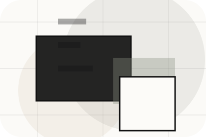
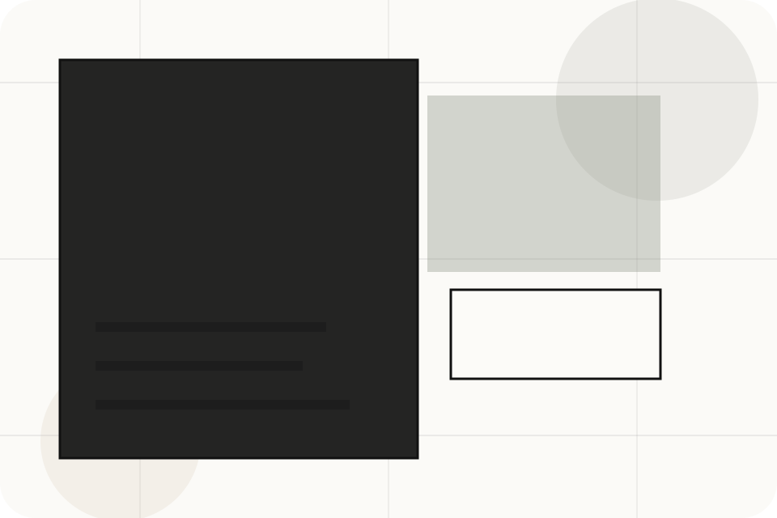
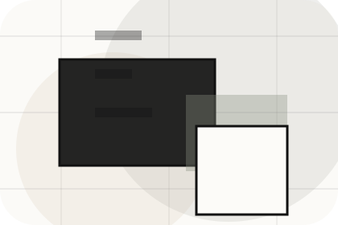
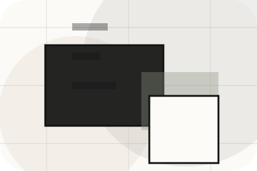
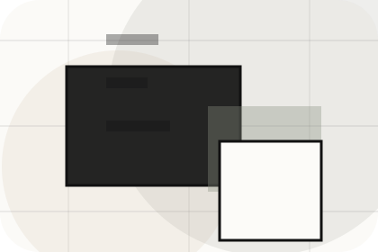
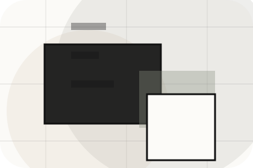
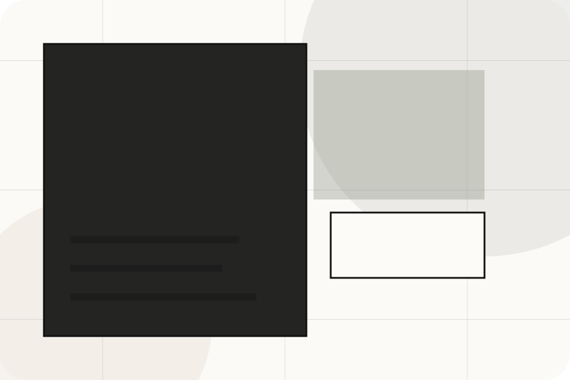
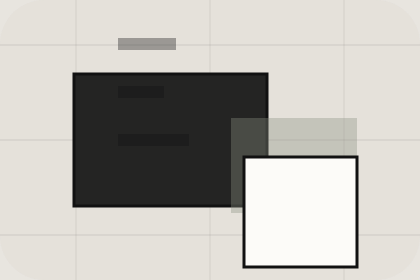

Details
What information helps Urban respond with a useful answer instead of a generic reply.
Contact / 01
Contact opens as a clear real estate decision hub: what Urban offers, who it helps, why it matters, and which route to take first.
The first screen combines positioning, proof, primary action, and fast internal navigation, so people can act immediately or compare the rest of the contact route with context.
Architectural listing hero
Select the closest route and Urban keeps the next step, proof, and follow-up expectation aligned with market confidence and discovery.

Contact / 02
Viewings makes the contact path concrete: what to send, how the response works, and what Urban needs before visitors get a valuation.
The section reduces contact friction by naming the channel, expected detail, privacy path, and response expectation instead of dropping visitors into a generic form.
Get ValuationUrban keeps viewings practical: send the key details, choose the right contact route, and know what kind of reply to expect.
Get ValuationContact / 04
Phone makes the contact path concrete: what to send, how the response works, and what Urban needs before visitors get a valuation.
The section reduces contact friction by naming the channel, expected detail, privacy path, and response expectation instead of dropping visitors into a generic form.
Get ValuationWhat information helps Urban respond with a useful answer instead of a generic reply.
How the visitor should think about response, urgency, location, or availability.

The expected next message keeps scope, timing, and the first practical step clear.
Contact / 05
Office makes the contact path concrete: what to send, how the response works, and what Urban needs before visitors get a valuation.
The section reduces contact friction by naming the channel, expected detail, privacy path, and response expectation instead of dropping visitors into a generic form.
Get ValuationWhat information helps Urban respond with a useful answer instead of a generic reply.
How the visitor should think about response, urgency, location, or availability.
The expected next message keeps scope, timing, and the first practical step clear.
Contact / 06
Hours makes the contact path concrete: what to send, how the response works, and what Urban needs before visitors get a valuation.
The section reduces contact friction by naming the channel, expected detail, privacy path, and response expectation instead of dropping visitors into a generic form.
Get ValuationWhat information helps Urban respond with a useful answer instead of a generic reply.
How the visitor should think about response, urgency, location, or availability.
The expected next message keeps scope, timing, and the first practical step clear.
Contact / 07
Map makes the contact path concrete: what to send, how the response works, and what Urban needs before visitors get a valuation.
The section reduces contact friction by naming the channel, expected detail, privacy path, and response expectation instead of dropping visitors into a generic form.
Get ValuationUrban keeps map practical: send the key details, choose the right contact route, and know what kind of reply to expect.
Get ValuationContact / 08
Response makes the contact path concrete: what to send, how the response works, and what Urban needs before visitors get a valuation.
The section reduces contact friction by naming the channel, expected detail, privacy path, and response expectation instead of dropping visitors into a generic form.
Get Valuation

What information helps Urban respond with a useful answer instead of a generic reply.
Contact / 09
Submit makes the contact path concrete: what to send, how the response works, and what Urban needs before visitors get a valuation.
The section reduces contact friction by naming the channel, expected detail, privacy path, and response expectation instead of dropping visitors into a generic form.
Get ValuationWhat information helps Urban respond with a useful answer instead of a generic reply.
How the visitor should think about response, urgency, location, or availability.

The expected next message keeps scope, timing, and the first practical step clear.
Contact / 10
Urban closes the contact route with a clear action, a quick reminder of the value, and a low-friction way to get a valuation.
Visitors who are ready can use the primary action. Visitors who are still comparing can scan the section links, proof, and support routes before they get a valuation.
Get ValuationThe final block keeps the choice simple: act now, compare one more proof route, or send enough detail for a focused response.
Get Valuation
market confidence and discovery
A real-estate editorial site with architecture-led listings, sparse navigation, area guides, and valuation flow. Contact ends with a direct path to get a valuation, plus enough context for visitors who still need to compare.

Get ValuationInformation is provided for planning and should be reviewed for the final client, location, and operating rules.